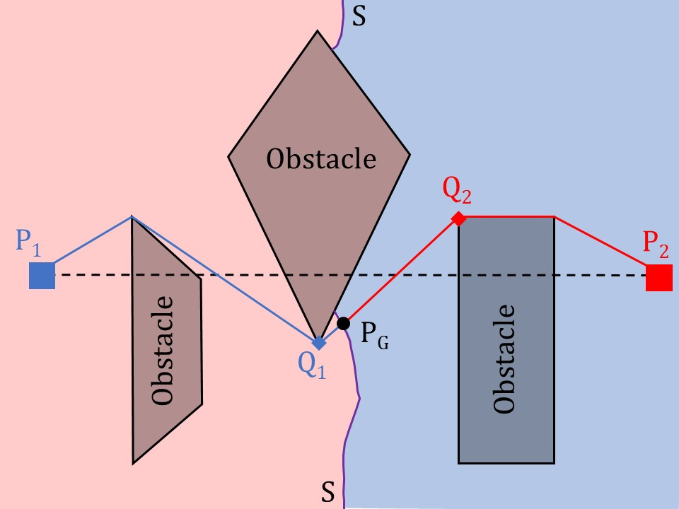
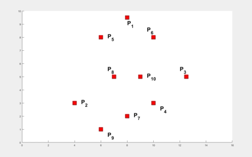

Research Direction
This page is an attempt to organize my research under various projects and provide an overview for each project. These theoretical aspects have been validated on indigeneously crafted, low-cost robotic testbeds.
Multiple autonomous agents working cooperatively have contributed to the development of robust largescale systems. One important aspect of multi-agent systems is gathering wherein the agents located at distinct initial locations attempt to meet to accomplish some task. It is advantageous to compute a location in the plane that optimizes resources such as the distance traveled or the power consumed by the agents.
In this research, we consider the distance traveled as the criterion and indicate two variations that are appropriate in this context: minimizing the sum of distances (minsum) and minimizing the maximum of distances (minimax) from agent locations. Each of the variations has specific advantages in optimizing the energy consumed by the agents individually and collectively. For instance, when the agents meet at the computed minsum location, the total energy expended by all the robots is minimized. On the other hand, meeting at the minimax location minimizes the worst case energy consumption of every individual agent.
Computing these locations for multiple agents becomes particularly challenging when obstacles are introduced into the environment. Traditional tools to compute the shortest paths amidst obstacles become redundant since the destination is unknown in this setting. In order to resolve these concerns, we develop a geometric framework that treats the distance travelled by an agent as the weight on its location. With the help of this framework, we develop hardware efficient algorithms that compute these locations in finite time for a generalized number of agent locations and obstacles. We then extend the analysis to handle dynamic obstacles as well. The theoretical analysis is followed by an experimental verification on indigenously fabricated miniature mobile robots.
My dissertation research utilizes concepts from computational geometry and control theory to solve optimization problems for rendezvous of multi-agent systems in an environment cluttered with obstacles. The research also focusses on developing hardware-efficient algorithms followed by their implementation on indigeneously fabricated mobile robots. Further, I have investigated the effect of an intelligent adversary that deliberately prevents agents from achieving rendezvous. Various concepts from Game Theory have been utilized to identify the dominant strategies for the adversary and the agents while computing the Nash Equilibrium for such a game. In the past, I have also worked on fabricating bipedal robots and implementing various gait algorithms mimiching human-like locomotion.
The following is the consolidated list of my research papers followed by details for each work.
Publications
B. Vundurthy and K. Sridharan, "Protecting an Autonomous Delivery Agent Against a Vision-Guided Adversary: Algorithms and Experimental Results," in IEEE Transactions on Industrial Informatics.doi: 10.1109/TII.2019.2958818
B. Vundurthy and K. Sridharan, "Multiagent Gathering With Collision Avoidance and a Minimax Distance Criterion—Efficient Algorithms and Hardware Realization," in IEEE Transactions on Industrial Informatics, vol. 15, no. 2, pp. 699-709, Feb. 2019.
B. Vundurthy and K. Sridharan, "Time Optimal Rendezvous for Multi-Agent Systems Amidst Obstacles - Theory and Experiments," IECON 2018 - 44th Annual Conference of the IEEE Industrial Electronics Society, Washington, DC, 2018, pp. 2645-2650.
B. Vundurthy, A. More, S. V. V. Raju and K. Sridharan, "Rendezvous of heterogeneous robots amidst obstacles with limited communication," 2016 Indian Control Conference (ICC), Hyderabad, 2016, pp. 347-353.
Onkar Kulkarni, B. Vundurthy, and K. Sridharan. 2019. Rendezvous of Heterogeneous Robots in Minimum Time - Theory and Experiments. In Proceedings of the Advances in Robotics 2019 (AIR 2019). Association for Computing Machinery, New York, NY, USA, Article 38, 1–6.
Multi-Agent Gathering with Collision Avoidance and a Minimax Distance Criterion

Multiple autonomous agents working cooperatively have contributed to the development of robust large-scale systems. A key consideration for small hardware agents engaged in collaborative factory automation and welfare support systems is limited area and power on-board.
When the agents attempt to meet for performing a task, it is natural for them to encounter obstacles and it is desirable for each agent to optimize its resources during its navigation. In this work, we develop efficient geometric algorithms to find a point, termed as the gathering point (and denoted by PG), for the agents that minimizes the maximum of path lengths. Although, minimax point has been of researched extensively in Facility Location theory, its extension to computing optimal location for multi-agent systems is very limited, especially in the presence of obstacles.We first present an algorithm that computes PG for two agents and n polygonal obstacles in O(n log2 n) time. The algorithm is based on a novel result that restricts the gathering point to the shortest path from one agent to another and is considerable improvement over a prior algorithm that computes the same in O(n3 log2 n) time.

Extension to k agents amidst n polygonal obstacles
We note that the minimax point computed when all agents start together is not identical to the point when one or more of the agents travel a certain distance before other agents start. We thus develop an algorithm to compute a weighted minimax point which handles the distances travelled by various agents before they arrive at locations of interest.
We use this to compute an efficient algorithm (with complexity of O(k2 + k n log2 n)) for computing PG for an environment with k agents and n obstacles. We achieve this by noting that in the presence of polygonal obstacles, any turn taken by an agent is necessarily at an obstacle vertex which can then be treated as weights while computing the gathering point. The illustration alongside presents a case where the minimax point is contained within an obstacle while the gathering point is ensured to be external to it.
Implementation on mobile robots
We developed a differential drive mobile robot platform that is supported by only a microcontroller with no external memory (an Arduino UNO). Computing the weighted minimax point requires solving two second order equations in two variables which cannot be handled by a microcontroller. We thus present a discretization algorithm to compute the gathering point and show that the robots indeed gather without any assistance from a central controller. We also show an efficient use of communication among agents to avoid any collisions when one robot interrupts the path of another.
Time Optimal Rendezvous for Multi-Agent Systems Amidst Obstacles - Theory and Experiments
Rendezvous of multiple autonomous agents has been of active interest in the last decade. Considerable work has been done on this problem with constraints on sensing and shape of the environment. However, not much is known on rendezvous amidst obstacles. When obstacles are introduced into the setting, it becomes natural to explore strategies for rendezvous that optimize some parameter (such as distance, time etc.). Our objective in this paper is to compute a location (which we refer to as the Time Optimal Rendezvous Point (TORP)) that minimizes the time for rendezvous amidst obstacles.


In the absence of obstacles, the TORP turns out to be at the center of the smallest enclosing circle. The computation of this circle is performed in O(k2) time where k is the number of agents. An illustration to compute this circle starting with two arbitrary agents and expanding to enclose all the remaining circles, all the while ensuring the smallest radius for the circle is shown alongside.
The problem becomes quite interesting when obstacles are involved. The times elapsed by various agents in arriving at various obstacle vertices play a role in computing TORP. We first present a result for k agents with finite times elapsed at their locations in the absence of obstacles. The weights at these locations are shown as circles with appropriate radii and the smallest enclosing circle encloses each of these smaller circles (shown alongside). We utilize this result to compute the TORP for k agents moving amidst n polygonal obstacles. An experimental illustration of the same is presented in the video below.
Rendezvous of Heterogeneous Robots Amidst Obstacles with Limited Communication
Bhaskar Vundurthy, Aniketh More, S.V.V. Raju and K. Sridharan
2016 Indian Control Conference (ICC), Hyderabad.
We consider the problem of rendezvous between a pair of mobile robots. The robots could be heterogeneous. We assume communication is limited to infrared beacons on each robot. No a priori knowledge of the positions of the robots is required. We present an algorithm for rendezvous of the robots in an environment that may contain one or more obstacles. We also address the issue of ambience when dealing with infrared beacons. Experiments with a mobile robot and a bipedal robot are presented to validate the efficacy of the proposed algorithm.
As the agents attempt to achieve rendezvous